Imagem: shop.greaterthangames.com · edição em inglês (Greater Than Games)Cooperativo · Controle de área
Como jogar Spirit Island
Para quem nunca jogou1 a 4 jogadores90 a 120 min14+Regras do manual em inglês (Greater Than Games)
· Redação Elite Boardgamers
Resumo em 1 minuto
Cada jogador é um Espírito que usa Poderes para destruir e assustar os Invasores da ilha; o grupo vence ao cumprir a condição do Nível de Terror antes que a Praga tome a ilha.
Todos jogam juntos: Crescer, ganhar Energia e pagar as cartas; depois Poderes Rápidos, Invasores, Poderes Lentos e O Tempo Passa.
Os Invasores Exploram numa terra, Constroem nela no turno seguinte e Devastam no outro, e cada Devastação com 2 ou mais de Dano põe 1 Praga.
Destruir Vilas e Cidades gera Medo; as cartas de Medo sobem o Nível de Terror e deixam a vitória mais fácil.
Como você aprende: 5 etapas, da mesa montada à contagem de pontosLeitura do essencial: cerca de 19 min
À vista, só o essencial para jogar. O que abre com + é explicação, exemplo, exercício ou regra de caso especial: abra quando precisar.
Comece a jogar em 5 minutos
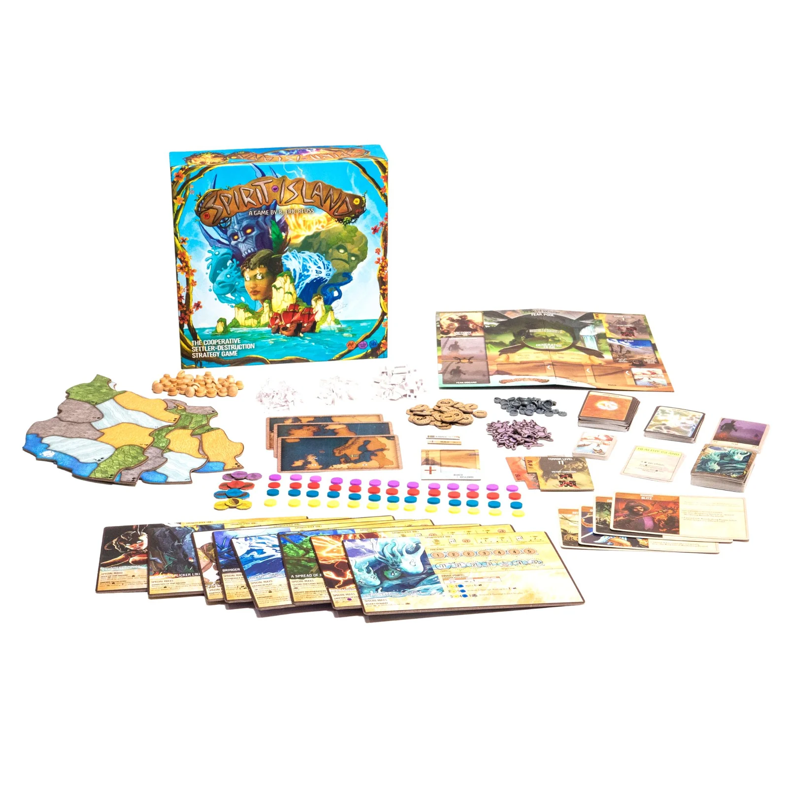
Imagem: shop.greaterthangames.com · edição em inglês (Greater Than Games)
Meta: em 5 minutos de leitura, montar a mesa para a primeira partida e jogar o primeiro turno sem abrir o manual.
A ideia do jogo
Spirit Island é cooperativo: todos jogam contra o jogo. Cada pessoa é um Espírito (Spirit) da natureza que defende a ilha de colonos, os Invasores (Invaders), que se espalham comandados por cartas e deixam Praga (Blight) na terra. Vocês vencem assustando e destruindo Invasores; perdem se a Praga, o tempo ou a perda de um Espírito chegarem antes p. 3 e 12.
Monte a mesa
Primeira partida, como o manual recomenda p. 3 e 6:
Tabuleiro dos Invasores num canto, com 4 marcadores de Medo por jogador na reserva de Medo.
Baralho de Medo (etapa 5): 9 cartas de Medo, com a divisória "Nível de Terror 3" a 3 cartas do fundo e a "Nível de Terror 2" 3 cartas acima dela.
Baralho de Invasores, no espaço Explorar: 3 cartas de Estágio I por cima, 4 de Estágio II no meio e 5 de Estágio III embaixo, cada grupo embaralhado.
Praga: sem carta de Praga na primeira partida. No espaço de Praga impresso no tabuleiro, ponha 5 Pragas por jogador mais 1 (errata): 6 no solo, 11 com 2.
Um tabuleiro da Ilha por jogador (no solo, um só), montados como nos desenhos das p. 6 e 7. Ponha em cada terra os Invasores, os Dahan (o povo nativo) e a Praga que os ícones dela mostram; essa Praga vem da caixa, não do espaço de Praga. O Oceano é a faixa de mar de cada tabuleiro p. 13 e 22.
Baralhos de Poder Menor e de Poder Maior embaralhados; Energia, Explorador, Vila, Cidade e Dahan ao alcance de todos.
Cada jogador pega as Presenças de uma cor e um Espírito de complexidade baixa; este guia usa o Golpe Veloz do Relâmpago (Lightning's Swift Strike): painel, 4 cartas de Poder Únicas (a mão) e carta de Progressão de Poder, com as cartas listadas nela separadas.
Cada jogador começa num tabuleiro da Ilha diferente e segue a montagem do lado do painel com a história. A do Relâmpago: 2 das 13 Presenças na Areia de número mais alto do seu tabuleiro. Vire o painel para o lado das trilhas e cubra os círculos tracejados: 7 Presenças na de Energia (1, 1, 2, 2, 3, 4, 4, 5) e 4 na de Jogadas (2, 3, 4, 5, 6). Ficam à mostra o 1 e o 2 p. 4, 6 e 14.
Revele a carta do topo do baralho de Invasores: ponha 1 Explorador em cada terra daquele tipo que tenha Vila ou Cidade, ou que seja vizinha de Vila, Cidade ou Oceano. A carta vai para o espaço Construir. No primeiro turno, os Invasores Constroem nas terras desse tipo que tenham Invasor: 1 Cidade se a terra tiver mais Vilas que Cidades, senão 1 Vila p. 6 e 10.
Seu primeiro turno
Todos jogam ao mesmo tempo. O turno tem cinco fases (p. 8 a 10):
Fase dos Espíritos. Cada um faz tudo de 1 opção de Crescimento; ganha a Energia do maior número descoberto na trilha de Energia; escolhe e paga as cartas, até o maior número descoberto na trilha de Jogadas. Ainda sem escolher onde usar.
Fase dos Poderes Rápidos. Cartas Rápidas (pássaro vermelho).
Fase dos Invasores. Devastar, Construir e Explorar, nas terras do tipo de cada carta; depois, as cartas andam uma casa para a esquerda.
Fase dos Poderes Lentos. Cartas Lentas (tartaruga azul).
O Tempo Passa. Cartas jogadas ao descarte; Dano e Elementos somem; Dahan feridos se recuperam.
Crescimento do Relâmpago
Faz tudo isto
Opção 1
Recuperar as cartas do descarte, ganhar 1 carta de Poder, ganhar 1 Energia
Opção 2
Pôr 1 Presença a até 2 terras da sua Presença e mais 1 numa terra onde você já tem Presença
Opção 3
Pôr 1 Presença a até 1 terra da sua Presença e ganhar 3 Energia
A Presença posta na ilha sai de uma das trilhas, sempre a próxima da esquerda, e descobre um número maior. "A até 1 terra" inclui a terra onde você já está (alcance 0). Ganhar carta de Poder, na primeira partida: pegue a próxima da carta de Progressão p. 14, 16 e 18.
Ainda não precisa saber
Poderes Inatos e Elementos: etapa 3. Devastar e Dahan: etapa 4. Medo e Praga: etapa 5.
Como a partida acaba
Vitória na hora, quando a ilha cumpre a condição do Nível de Terror atual (no Nível 1, nenhum Invasor). Derrota se acabar a Praga do espaço de Praga, se um Espírito ficar sem Presença na ilha ou se for preciso Explorar com o baralho de Invasores vazio p. 12.
Prefere ver? Regras em vídeo. Ele complementa este guia; em caso de diferença, vale o manual.
Spirit Island - Como Jogar, canal Romir Play House · abrir no YouTube
0Antes de tudo: o que é este jogoOpcional
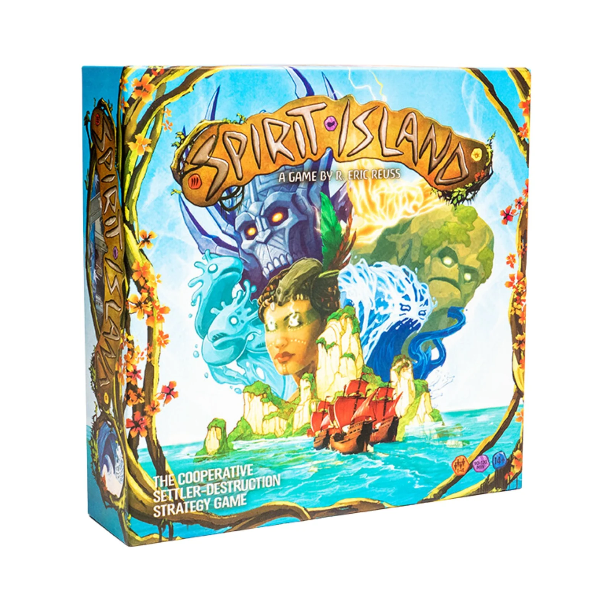
Imagem: shop.greaterthangames.com · edição em inglês (Greater Than Games)Abrir esta seção
Spirit Island é cooperativo, de 1 a 4 pessoas. Cada jogador é um Espírito da natureza numa ilha isolada, onde colonos chegados pelo mar atacam os Dahan, o povo nativo. Os Espíritos começam pequenos e precisam crescer para expulsá-los p. 3.
Os Invasores não têm jogador: o baralho de Invasores diz onde eles agem, num ritmo fixo. Numa terra eles Exploram; no turno seguinte, Constroem ali; no outro, Devastam p. 10 e 21. Esse ritmo avisa com dois turnos de antecedência onde vai doer. Do lado dos Espíritos, a Energia paga as cartas de Poder, e a Presença marca de onde os Poderes alcançam.
Depois que o grupo conhece o jogo, uma partida leva de 90 a 120 minutos, um pouco menos com 1 ou 2 jogadores e um pouco mais com 4 p. 3.
1Como este guia ensinaOpcional
Imagem: shop.greaterthangames.com · edição em inglês (Greater Than Games)Abrir esta seção
O guia tem cinco etapas: montar a mesa e escolher o Espírito; a rodada e as fases; Poderes, Presença e Energia; os Invasores e os Dahan; Praga, Medo, vitória e derrota. Cada etapa traz a explicação, o passo a passo e exercícios de múltipla escolha: toque numa opção para ver a certa e a explicação. Depois das etapas, uma seção mostra como montar e jogar sozinho; no fim vêm uma avaliação curta e uma folha de consulta para a mesa.
2Etapa 1: montar a mesa e escolher o Espírito
Por que funciona assim
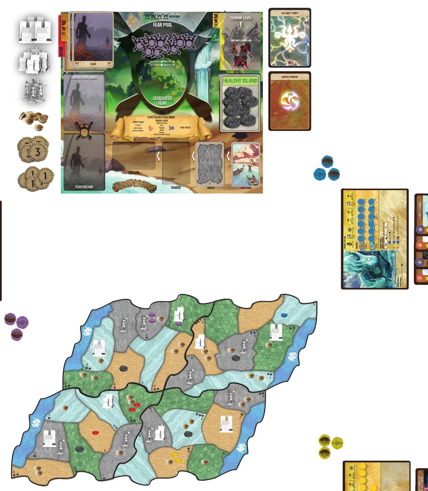
Mesa montada para 4 jogadores, sem Adversário nem Cenário: o tabuleiro dos Invasores com o baralho de Medo, a reserva de Medo, a carta de Praga e as cartas de Invasor, e a ilha de quatro tabuleiros com Invasores, Dahan, Praga e as Presenças de cada cor. Ilustração: manual oficial Greater Than Games p. 7Regra adicional: Os quatro Espíritos para começarRegra adicional: O tabuleiro de início não prende vocêRegra adicional: Carta de PragaRegra adicional: Peças acabaramSobre a edição: Manual mais antigoVer um exemplo resolvidoPratique esta etapa: exercícios com respostas
3Etapa 2: a rodada e as fases
Imagem: shop.greaterthangames.com · edição em inglês (Greater Than Games)Por que funciona assimRegra adicional: Rápido não esperaRegra adicional: Pular um PoderRegra adicional: Quem decideVer um exemplo resolvidoPratique esta etapa: exercícios com respostas
4Etapa 3: Poderes, Presença e Energia
Por que funciona assim
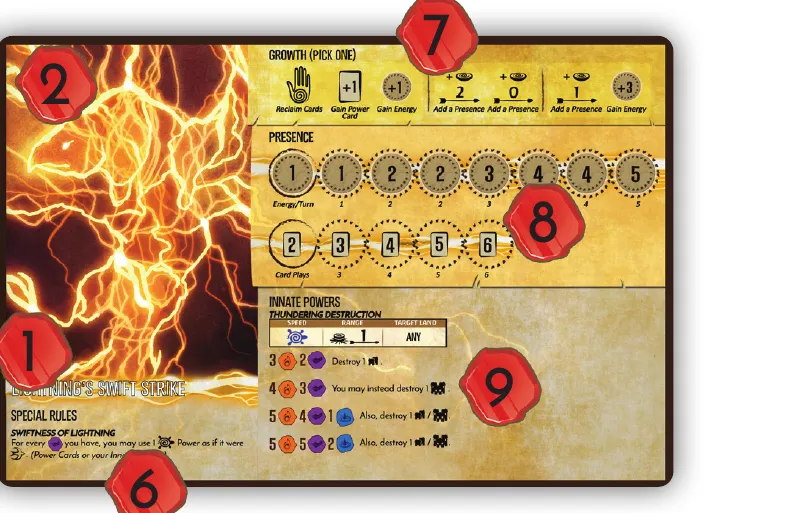
O painel do Golpe Veloz do Relâmpago, lado do jogo: as três opções de Crescimento no alto (7), as trilhas de Energia e de Jogadas com o primeiro número descoberto (8) e o Poder Inato Destruição Trovejante, com os limiares de Fogo, Ar e Água (9). Ilustração: manual oficial Greater Than Games p. 14
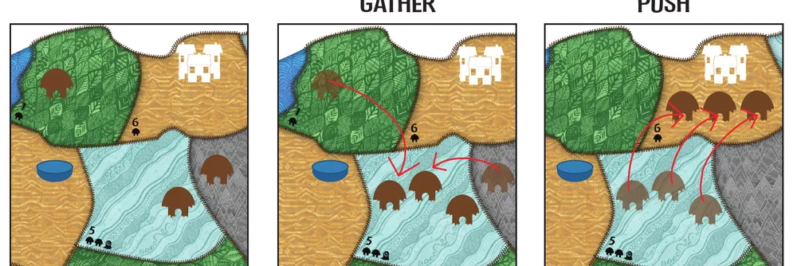
Reunir e Empurrar com uma só carta: o Espírito azul Reúne 2 Dahan das terras vizinhas na terra 5 e depois Empurra 3 Dahan dela para a terra 6, onde está a Cidade que vai Devastar. Ilustração: manual oficial Greater Than Games p. 19Regra adicional: Destruição Trovejante, o Poder Inato do RelâmpagoRegra adicional: Rapidez do Relâmpago, a regra especial deleRegra adicional: Uma terra, um turno, um uso; faça o que derRegra adicional: Elementos e "Recuperar 1" nas trilhasRegra adicional: Reposicionar PresençaRegra adicional: Remover e SubstituirRegra adicional: DefenderRegra adicional: RepetirDica: Pouca Energia?Ver um exemplo resolvidoPratique esta etapa: exercícios com respostas
5Etapa 4: os Invasores e os Dahan
Por que funciona assim
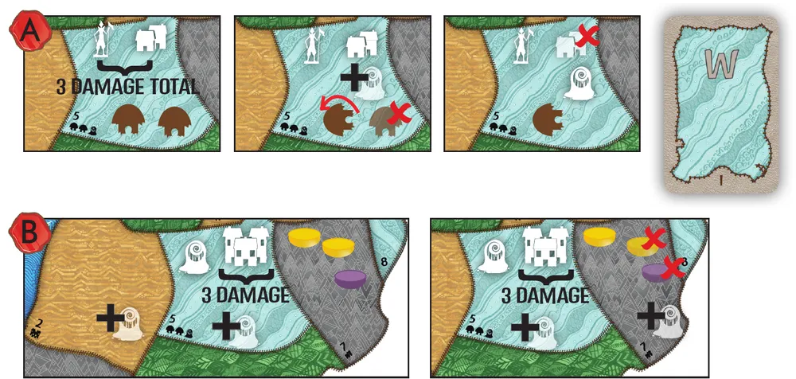
Devastar num Pântano. Em A, 1 Vila e 1 Explorador causam 3 de Dano: 1 Praga na terra, 1 Dahan destruído e outro ferido; o Dahan que sobra revida e destrói a Vila. Em B, a Cidade causa 3 de Dano numa terra que já tinha Praga: a Praga extra vai para uma terra vizinha, à escolha dos jogadores, e as duas opções mostradas têm efeitos diferentes. Ilustração: manual oficial Greater Than Games p. 11
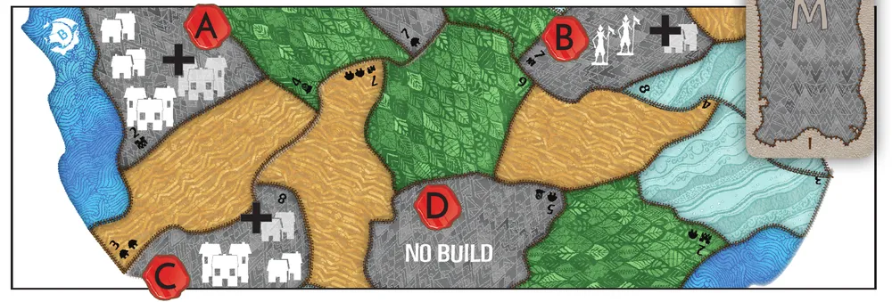
Construir em Montanhas: em A há mais Vilas que Cidades, então entra uma Cidade; em B só há Exploradores (zero Vila e zero Cidade) e em C o número é igual, então entra uma Vila; D não tem Invasores e não recebe nada. Ilustração: manual oficial Greater Than Games p. 11
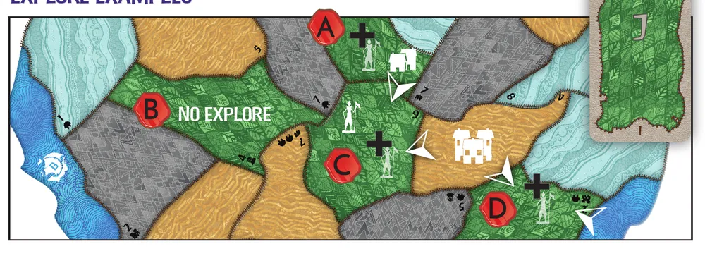
Explorar em Selvas: A já tem Vila ou Cidade e recebe Explorador; B não é costeira nem vizinha de Vila ou Cidade e fica vazia; C é vizinha de uma terra com Vila ou Cidade; D é costeira e também vizinha. Ilustração: manual oficial Greater Than Games p. 11Regra adicional: Estágio II e a bandeiraRegra adicional: Estágio IIIRegra adicional: Dahan revidam mesmo sem DanoRegra adicional: Dahan feridoDica: O que o manual sugereVer um exemplo resolvidoPratique esta etapa: exercícios com respostas
6Etapa 5: Praga, Medo, vitória e derrota
Por que funciona assim
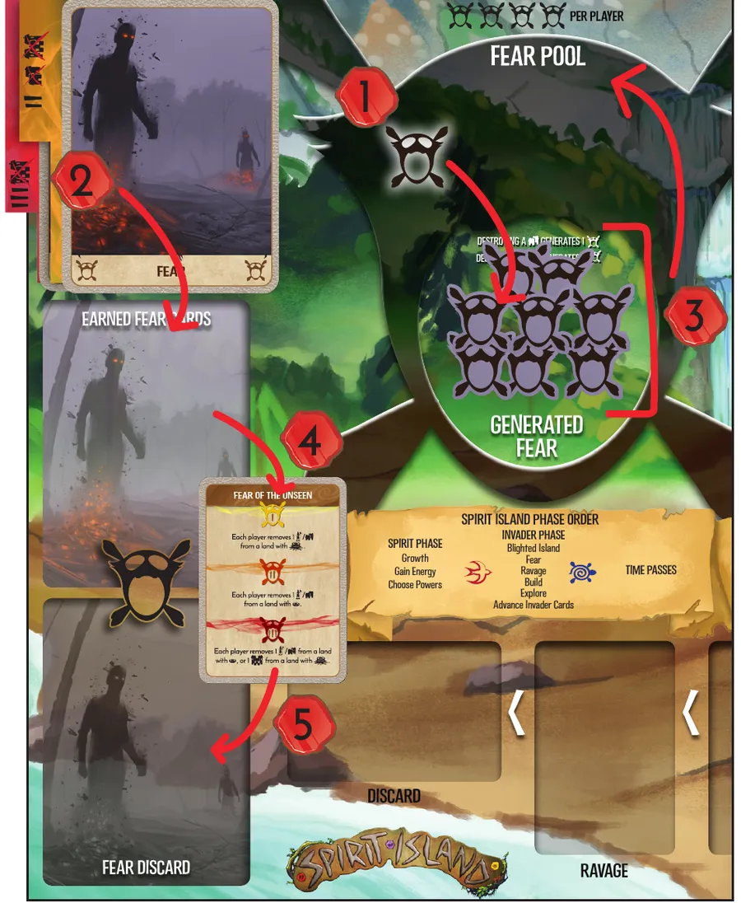
O caminho do Medo no tabuleiro dos Invasores: (1) cada Medo passa um marcador para Medo Gerado; (2) com todos passados, a carta do topo vai para Cartas de Medo Conquistadas; (3) os marcadores voltam; (4) na fase dos Invasores, a carta é resolvida no Nível de Terror atual; (5) e vai para o descarte. Ilustração: manual oficial Greater Than Games p. 12Regra adicional: Carta de Praga viradaRegra adicional: Medo dentro do MedoRegra adicional: "Cada jogador" nas cartas de MedoRegra adicional: Vitória com sacrifícioDica: Praga cedoVer um exemplo resolvidoPratique esta etapa: exercícios com respostas
7Modo solo: jogar sozinho
Por que funciona assimUm tabuleiro da Ilha, que no solo é a ilha inteira: em cima, cada terreno (Selva, Areia, Pântano, Montanha) e o Oceano à esquerda; embaixo, as terras costeiras, que tocam o Oceano, e as do interior. As outras bordas são penhascos. Ao lado do número de cada terra ficam os ícones de montagem, que dizem quais Invasores, Dahan e Praga entram ali no começo. No exemplo abaixo, a Areia de número mais alto deste tabuleiro é a terra 6. Ilustração: manual oficial Greater Than Games p. 13
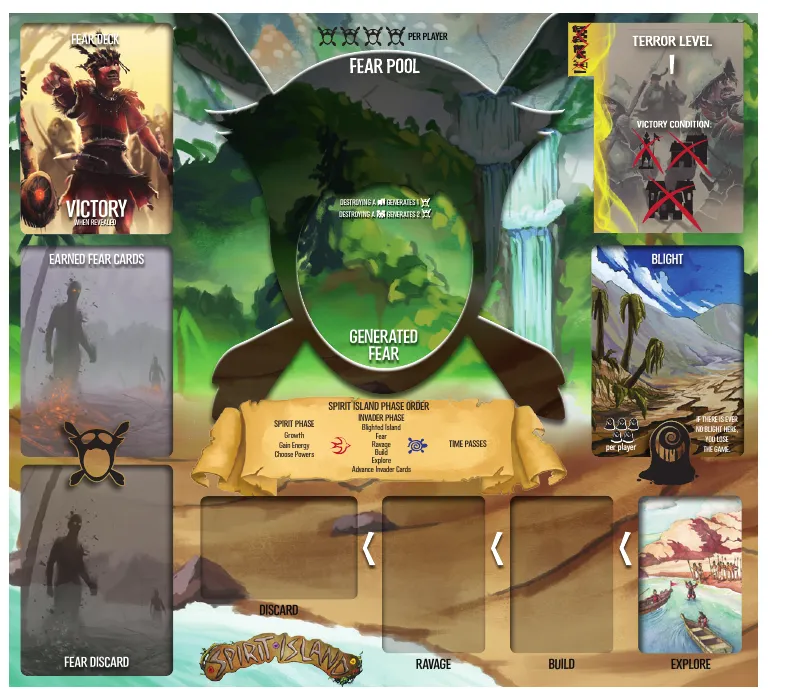
O tabuleiro dos Invasores: baralho de Medo e Cartas de Medo Conquistadas à esquerda, reserva de Medo e Medo Gerado no centro, Nível de Terror e espaço de Praga à direita, e embaixo os espaços Devastar, Construir e Explorar, este com o baralho de Invasores. Ilustração: manual oficial Greater Than Games p. 4
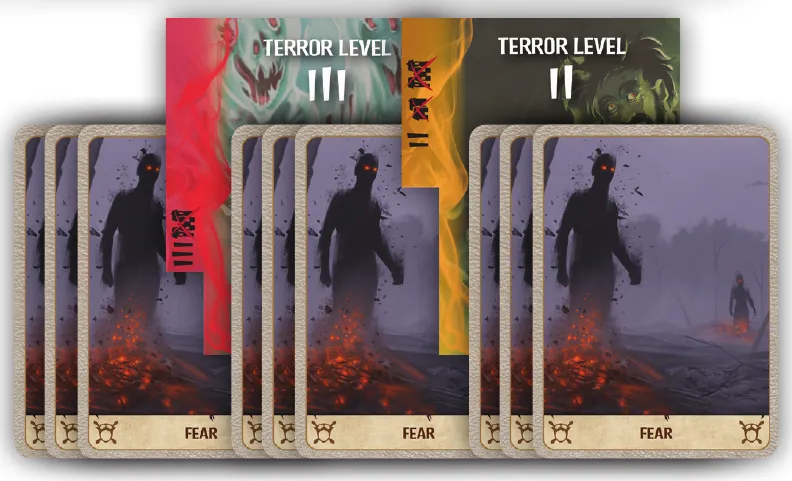
O baralho de Medo aberto em leque: três grupos de 3 cartas, separados pelas divisórias de Nível de Terror II e III. Ilustração: manual oficial Greater Than Games p. 6O painel do Relâmpago no solo: as 11 Presenças que não vão para a terra 6 cobrem os círculos tracejados, 7 na trilha de Energia (em cima) e 4 na de Jogadas; à mostra ficam só o 1 de Energia e o 2 de Jogadas, os círculos de linha cheia. No primeiro turno solo, a opção 3 de Crescimento (no alto) dá 3 Energia. Ilustração: manual oficial Greater Than Games p. 14
Uma rodada sozinho. Um exemplo construído com as regras do manual, num tabuleiro como o da primeira figura desta seção, em que a Areia de número mais alto é a terra 6 p. 13.
Ver um exemplo resolvidoConstruir, como no passo 4 do exemplo solo: a terra B tem só Exploradores (0 Vila e 0 Cidade) e recebe uma Vila, como a sua Selva com 1 Explorador; a terra A, com mais Vilas que Cidades, recebe Cidade; a D, sem Invasores, nada. Ilustração: manual oficial Greater Than Games p. 11Explorar, como no passo 4 do exemplo solo com a carta nova: no seu tabuleiro, recebe 1 Explorador cada terra do tipo da carta que tenha Vila ou Cidade (A), seja vizinha de uma (C) ou seja costeira (D); a terra B, do interior e longe de Vila e Cidade, fica vazia. Ilustração: manual oficial Greater Than Games p. 11Ver um exemplo resolvidoDevastar, como no turno 2 do exemplo solo: em A, 1 Vila e 1 Explorador causam 3 de Dano e põem 1 Praga, que no solo sai do espaço de 6; em B, a Praga cai numa terra que já tinha Praga, e a extra vai para uma vizinha: se for uma terra com Presença sua, você perde 1 Presença ali. Ilustração: manual oficial Greater Than Games p. 11Regra adicional: Poderes que miram "outro Espírito"Regra adicional: Mapa temático com 1 jogadorPratique esta etapa: exercícios com respostas
8Situações especiaisOpcional
Imagem: shop.greaterthangames.com · edição em inglês (Greater Than Games)Abrir esta seçãoRegra adicional: Adversários, Cenários e mapa temáticoRegra adicional: Pontuação opcionalRegra adicional: Jogo difícil demaisSobre a edição: Expansões
9Avaliação finalOpcional
Imagem: shop.greaterthangames.com · edição em inglês (Greater Than Games)Abrir esta seção
Responda sem consultar. Cada resposta diz o que reler se errar.
Em que ordem um Espírito faz a fase dos Espíritos?
Crescimento, Energia, cartas p. 8. Se errou, releia a etapa 2.
Os Invasores Exploraram em Pântano neste turno. Onde eles Devastam daqui a dois turnos?
A carta anda de Explorar para Construir e depois para Devastar p. 10 e 21. Se errou, releia a etapa 2.
A sua trilha de Energia mostra descobertos 1, 1 e 2. Quanto você ganha de renda?
Vale só o maior número descoberto p. 14. Se errou, releia a etapa 3.
Você joga uma carta Lenta com 1 Fogo. Esse Fogo conta para o limiar de um Poder Inato Rápido no mesmo turno?
Os Elementos valem desde o pagamento p. 8 e 16. Se errou, releia a etapa 3.
Uma terra com 1 Cidade e 2 Exploradores Devasta. Quanto de Dano à terra e quantas Pragas?
3 + 1 + 1 = 5; com 2 ou mais, entra 1 Praga, uma só p. 9. Se errou, releia a etapa 4.
Uma terra sem Invasores está no tipo da carta de Construir. O que acontece?
Construir só age em terras com Invasores p. 10. Se errou, releia a etapa 4.
Destruir uma Cidade gera quanto Medo?
Vila 1, Cidade 2 p. 12. Se errou, releia a etapa 5.
Seu Espírito perdeu a última Presença da ilha. O que acontece?
Espírito sem Presença na ilha é derrota imediata p. 12 e 13. Se errou, releia a etapa 5.
10Para consultar durante a partida
Imagem: shop.greaterthangames.com · edição em inglês (Greater Than Games)
O turno (todos ao mesmo tempo; p. 8 a 10 e 32):
Espíritos: Crescer (1 opção, tudo dela); ganhar Energia (maior número descoberto); jogar e pagar cartas (até o número de Jogadas). Elementos valem desde já.
Poderes Rápidos: cartas e Inatos Rápidos.
Invasores: Ilha Arruinada (se a carta virou); Medo (cartas conquistadas, no Nível atual); Devastar; Construir; Explorar; avançar as cartas.
Poderes Lentos: cartas e Inatos Lentos.
O Tempo Passa: cartas jogadas para o descarte; Dano e Elementos somem.
Peça
Vida
Dano ao Devastar
Medo se destruída
Explorador
1
1
0
Vila
2
2
1
Cidade
3
3
2
Dahan
2
revida com 2
não gera
Devastar: Dano total menos Defender; 2 ou mais põe 1 Praga; cada 2 destrói 1 Dahan, sobra 1 fere; Dahan vivos revidam com 2 cada.
Construir: terras do tipo com Invasores; mais Vilas que Cidades, entra Cidade; senão, Vila.
Explorar: terras do tipo com Vila ou Cidade, ou vizinhas de Vila, Cidade ou Oceano; 1 Explorador cada.
Praga entrando numa terra: destrói 1 Presença de cada Espírito ali; se já havia Praga, 1 Praga numa vizinha (cascata).
Medo: 4 marcadores por jogador; completou, conquista 1 carta; divisória revelada sobe o Nível na hora.
Vitória: Nível 1, nenhum Invasor; Nível 2, nenhuma Vila nem Cidade; Nível 3, nenhuma Cidade; ou conquistar a última carta de Medo e revelar o espaço "Vitória" embaixo do baralho. Derrota: acabou a Praga; Espírito sem Presença; baralho de Invasores vazio na hora de Explorar.
Golpe Veloz do Relâmpago: montagem com 2 Presenças na Areia de número mais alto. Energia 1, 1, 2, 2, 3, 4, 4, 5; Jogadas 2, 3, 4, 5, 6. Para cada Ar, 1 Poder Lento pode ser Rápido.
Nomes em inglês do manual: Presença (Presence), Local Sagrado (Sacred Site), Crescimento (Growth), Jogadas (Card Plays), Recuperar (Reclaim), Esquecer (Forget), Vila (Town), Devastar (Ravage), Praga (Blight), Medo (Fear), Nível de Terror (Terror Level), Reunir (Gather), Empurrar (Push), Selva (Jungle), Areia (Sands), Pântano (Wetland).
11Fontes
Imagem: shop.greaterthangames.com · edição em inglês (Greater Than Games)
Greater Than Games. Spirit Island, livro de regras do jogo base em inglês (32 páginas, versão impressa "VER: 23.08", arquivo de 18/09/2023, com a errata de 1 Praga a mais na p. 6). Link "Digital rulebook" em https://greaterthangames.com/pages/spirit-island. Consultado em 04/11/2026.
Regras conferidas no manual oficial em inglês da Greater Than Games (Spirit Island Rulebook, 32 páginas, versão impressa "VER: 23.08", de setembro de 2023), porque a Ace Studios, que publica o jogo no Brasil, não disponibiliza o manual em português no próprio site. Os nomes dos componentes e das regras são tradução nossa e podem ser diferentes dos impressos na caixa brasileira; na primeira vez, o nome em inglês vem entre parênteses. As páginas citadas são as do manual em inglês. Este guia cobre só o jogo base.